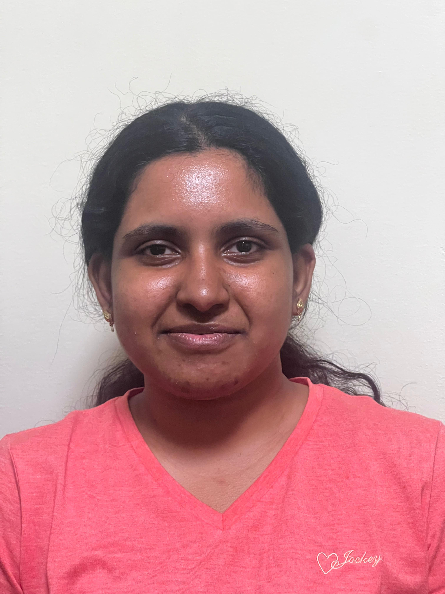
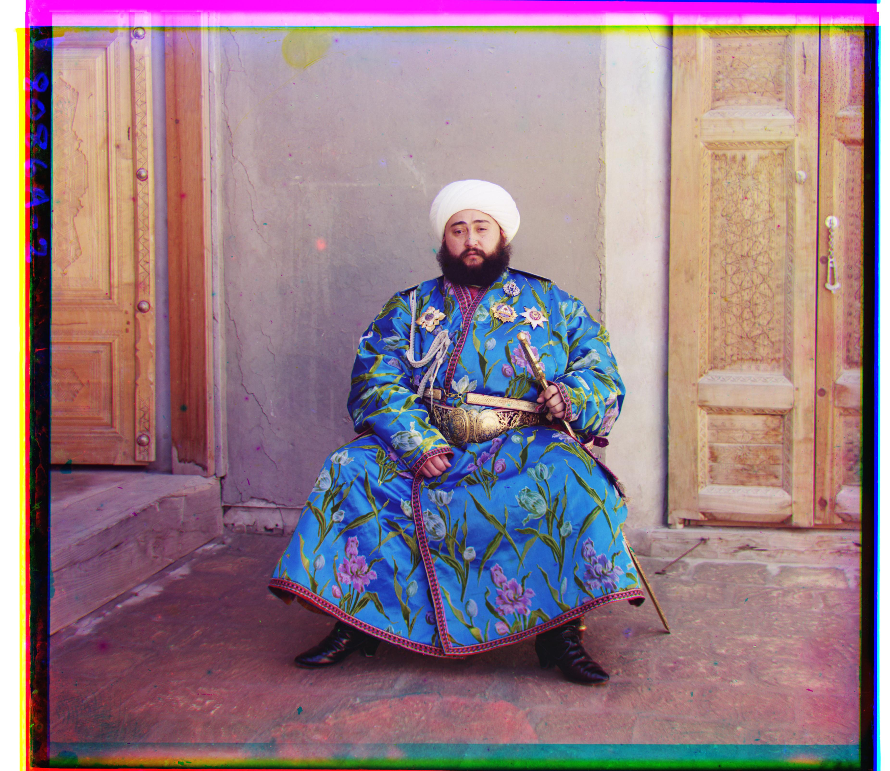

CS180 · Fall 2026
Introduction to Computer Vision and Computational Photography

Project 0
Perspective, focal length, and the physics behind a few photography exercises.

Project 1
Aligning glass-plate negatives into color photographs, from single-scale search to a coarse-to-fine pyramid.